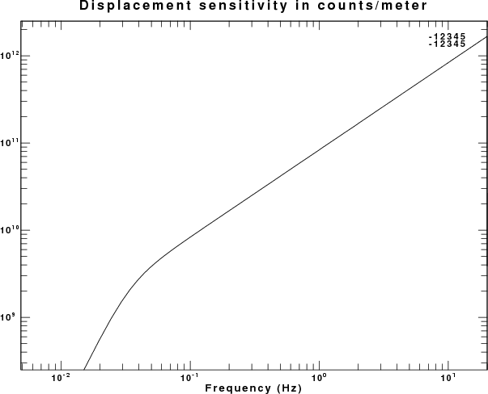
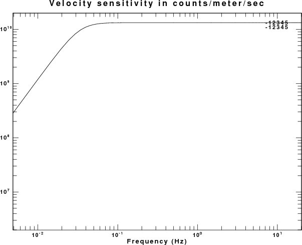
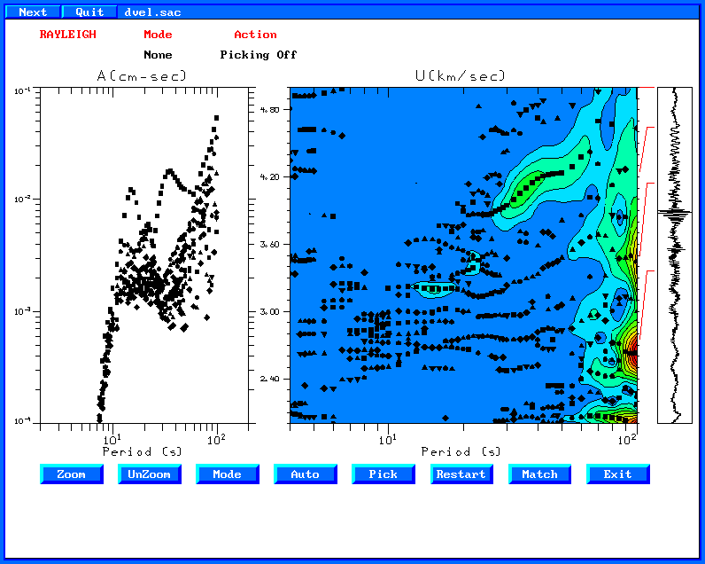

Seisan can be used to create response files in GSE format and waveforms in sac files. This response addresses the practical issue of how to convert the GSE response information to a format for use with sac or gsac
The documentation for the GSE2.1 format is found at
http://www.seismo.ethz.ch/autodrm/autodrm_doc.html
and then clicking on the documetation for the provisional_GSE2.1.pdf
file.
The files sent to me are the following:
20080529_1600z.sac which is the
waveform file in Intel binary format
C214_B__Z.2007-01-01-0000_GSE
which is the GSE response information
C214_B__Z.2007-01-01-0000_SEI
which is some file created by seisan which I do not need or understand.
Let us look at the GSE response file:
CAL2 C214 B_Z CMG-6 0.12E-01 1. 40.00000 2007/01/01 00:00
PAZ2 1 V 0.20000000E-05 2 3 Laplace transform
-0.14660765E+00 0.14956973E+00
-0.14660765E+00 -0.14956973E+00
0.00000000E+00 0.00000000E+00
0.00000000E+00 0.00000000E+00
0.00000000E+00 0.00000000E+00
DIG2 2 0.66475240E+07 40.00000 CD24E1
According the GSE documentation, the CAL2 line (page 76) indicates that the system response is 0.12E-01 coutns/nanometer at a period of 1.0 seconds.
The PAZ2 entries indicate that the normalization constant is 0.2E-5, that there are two poles and 3 zeros in the response. The input to the stage is nanometers and the output is Volts.
The DIG2 entry indicates that there are 0.664E+7 counts output for each Volt of input to this stage.
This information can be converted to the sac pole-zereo file given next.
The final pole-zero file in sac format is sac.pz
which is also listed here:
* ****
* NETWORK (KNETWK):
* STATION (KSTNM ):
* COMPONENT (KCMPNM):
* LOCATION (KHOLE ):
* START :
* END :
* INPUT UNIT : METER
* OUTPUT UNIT : COUNT
* LATITUDE (DEG) :
* LONGITUDE (DEG) :
* ELEVATION (M) :
* DEPTH (M) :
* DIP (DEG) :
* AZIMUTH (DEG) :
* INSTRUMENT COMMENT:
* CHANNEL_FLAG :
* GSE 0.6647E+7 counts/nm at 40 sec
* constant is the product of the GSE scale 0.20000000E-05
* and the digitizer constant 0.66475240E+07 = 13.295 counts/nanometer
* This is equivalent to 1.3296E+10 for counts/meter
* ****
ZEROS 3
0.00000000E+00 0.00000000E+00
0.00000000E+00 0.00000000E+00
0.00000000E+00 0.00000000E+00
POLES 2
-0.14660765E+00 0.14956973E+00
-0.14660765E+00 -0.14956973E+00
CONSTANT 1.3296E+10
To test this file, use gsac to create a unit area impulse (Note that if you use sac, then you must divide by delta to create a unit area impulse)
GSAC> fg impulse delta 0.025 npts 8192 GSAC> transfer from none to polezero subtype sac.pz GSAC> echo This is the displacement sensitivity in counts/meter GSAC> title on l t S M Text "Displacement sensitivity in counts/meter" GSAC> fft GSAC> psp GSAC> fg impulse delta 0.025 npts 8192 GSAC> transfer from vel to polezero subtype sac.pz GSAC> echo This is the velocity sensitivity in counts/meter/sec GSAC> title on l t S M Text "Velocity sensitivity in counts/meter/sec" GSAC> fft GSAC> psp
The result of these commands are two plots:

Displacment sensitivity in counts/meter

Velocity sensitivity in counts/meter/sec
The student provided the following information about the system:
The sac file was generated from a Guralp GCF format and the response file was produced with RESP program of Seisan using the following parameters:
Seismometer natural period = 30s
Seismometer damping ratio = 0.7
Sensor loaded generator constant = 2000 V/m/s
Recording media gain = 419430.4 Count/V
Amplifier gain = 24 DB
Digitiser sample rate = 40 Sample/s
Our seismometer is CMG-EDU based on CMG-6 technology while the digitizer model is CD24E1
This means that the response of the system is as follows
This means that the response of the system is as follows
1 meter/sec -> Seismometer -> 2000 Volts (in the passband, e.g.,
1 Hz)
1 Volt -> amplifier -> 15.85 Volts
1 Volt -> digitizer -> 419430.4 Counts.
Therefore the system outputs 1.3295E+10 counts/meter/second at 1 Hz. To obtain the displacment sensitivity at 1 Hz, we recall that 1 meter/sec at 1 Hz is equivalent to 1/6.2831853 meters. Thus the sensitivity is 8.3535E+10 counts/meter or 83.535 counts/nanometer or equivalently 0.01197 nanometers/count which is the number given on the CAL2 line.
Now that the polezero response used is correct since we see these
values on the plots.
Removing the instrument response:
Because modern broadband instruments have a flat response to ground velocity in the passband, I prefer to reduce reduce the gorund motion to units of meters/sec in the following manner for this data file:
GSAC> r 20080529_1600z.sac GSAC> transfer from polezero subtype sac.pz to vel freqlimits 0.004 0.005 10 20 GSAC> w vel.sac
In order to study group velocities you must place the event coordinates and origin time and the station coordinates into the sac file. As an example I will use the Iceland event for this time period and I will assume that your station is at latitude 0 and longitude 0: (you must use your actual station and event information)
GSAC> r vel.sac GSAC> ch stla 0 stlo 0 GSAC> ch evla 63.92 evlo -21.17 GSAC> ch ocal 2008 05 29 15 46 6 200 GSAC> ch lcalda true lovrok true GSAC> wh
note that the ch ocal is a gsac command. For Sac you must use
ch o gmt 2009 150 15 46 6 200.
When you are studying teleseismic surface waves, you are note interested in frequencies greater than 1 Hz. If you resample, the time series will be smaller, and the computations will be much faster since the length of the Fast Fourier transforms will be shorter. To do this I lowpass filter and then interpolate:
GSAC> lh
vel.sac (0):
NPTS 144000 B 0
E 3599.975 DELTA 0.025
DEPMAX 2.584191e-06 DEPMIN -2.779191e-06
DEPMEN 6.959091e-09 NZYEAR 2008
NZJDAY 150 NZHOUR 16
NZMIN 0 NZSEC 0
NZMSEC 0 KZDATE May 29 (150), 2008
KZTIME 16:00:00.000 O -833.8
KSTNM C214 KCMPNM B_Z
STLA 0 STLO 0
EVLA 63.92 EVLO -21.17
DIST 7301.042 AZ 156.6483
BAZ 349.9096 GCARC 65.65807
USER1 0.1 USER2 200
CMPAZ 0 CMPINC 0
NVHDR 6 IFTYPE ITIME
LPSPOL FALSE LOVROK TRUE
LCALDA TRUE LHDR5 FALSE
You will see that hte origin time is set O, the station an event coordinates are entered, and the distances and back azmiuths computed.
do_mft
GSAC> r vel.sac
GSAC> lp c 1 n 3
GSAC> interpolate delta 0.25
GSAC> w dvel.sac
GSAC> quit
Running do_mft gives the following image:

The surface wave dispersion is seen at the top. Note that since the station coordinates are INCORRECT the velocities will be incorrect.